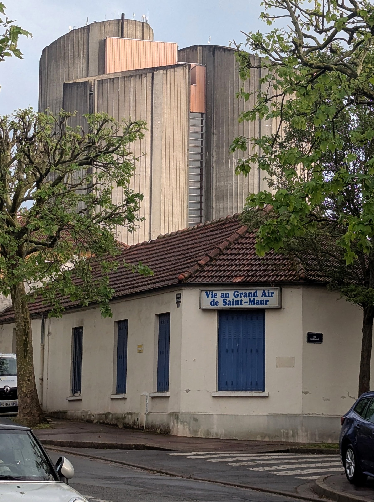
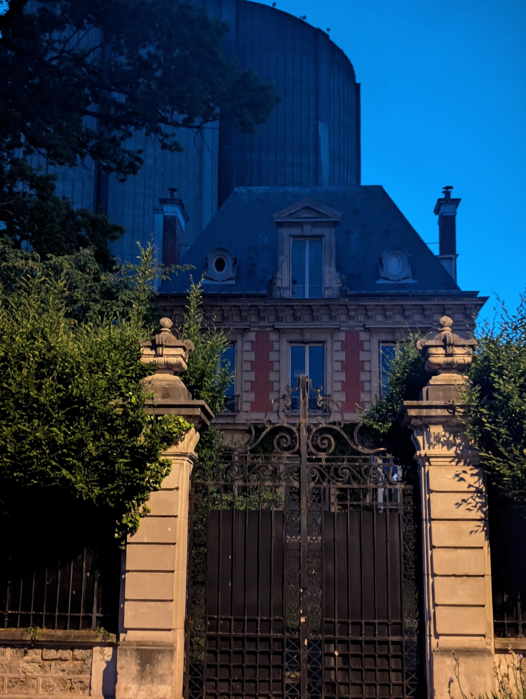
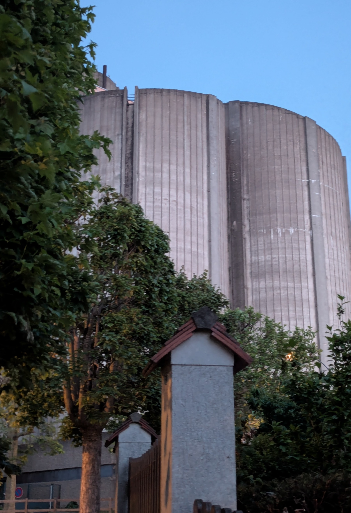
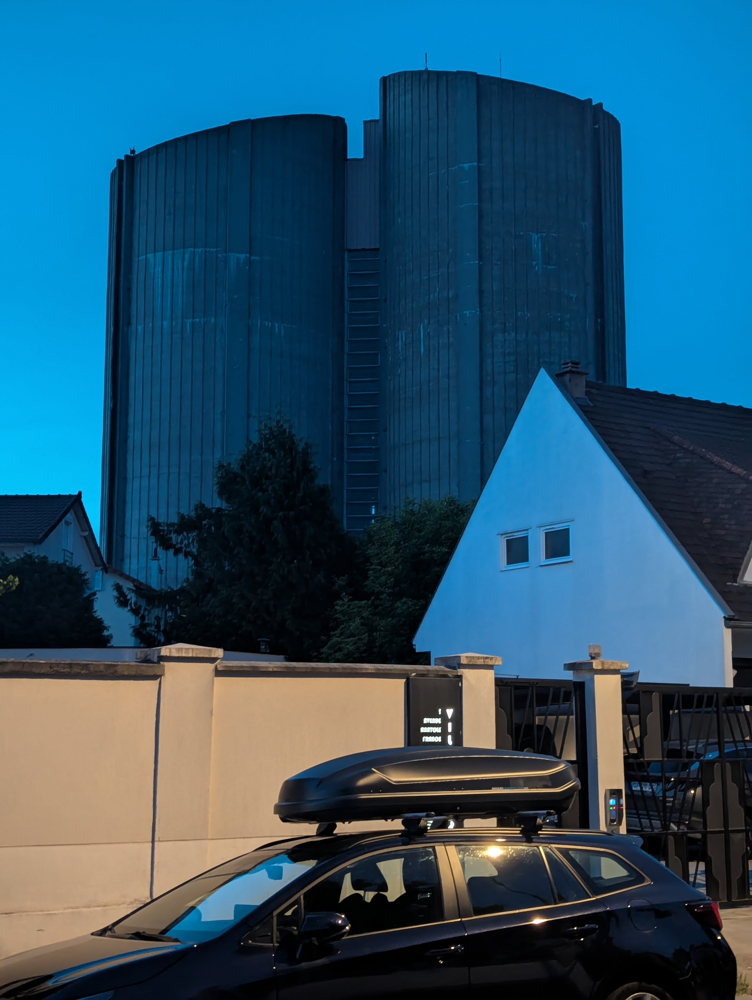
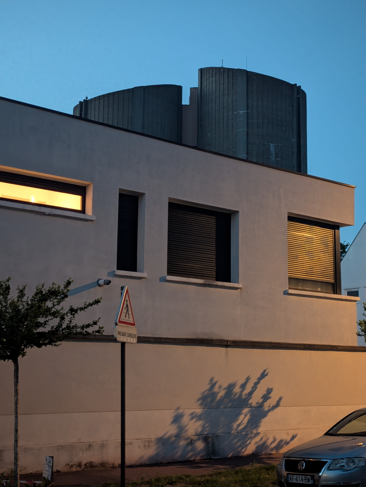
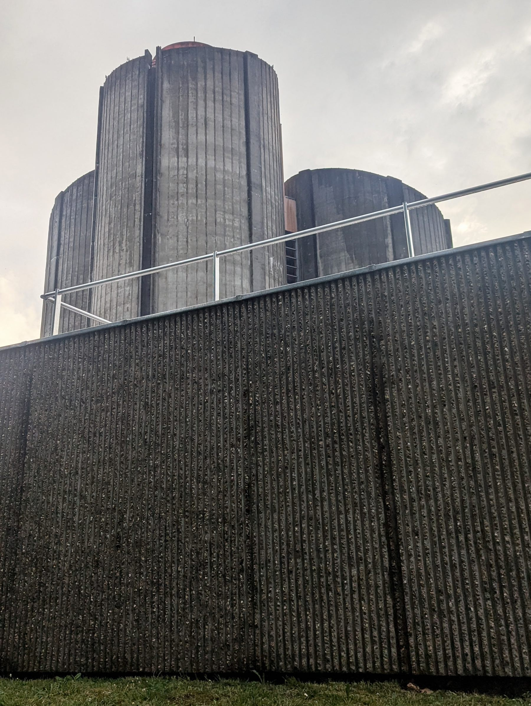
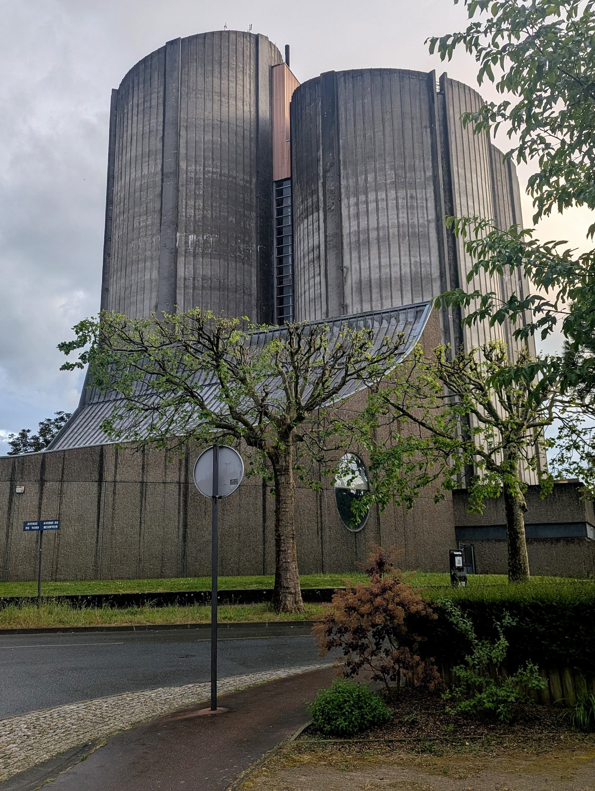

Гуляя по берегу Марны, я заметил необычное сооружение, тяжело и безапелляционно возвышающееся над толпой благополучных буржуазных вилл — такой себе Кинг-Конг в центре Нью-Йорка. Действительно, в здании чувствовалось что-то первобытное, доархитектурное, связанное со смутными хтоническими силами, которые следует удерживать внутри. — Мощные вертикальные цилиндры собраны в могучий пучок. Бетонные каннелюры подчеркивают массу стены, делая почти физически ощутимым внутреннее напряжение сооружения. Окон нет. Нет мелких членений. Нет умиротворяющих горизонталей — только гигантский вертикальный такт, визуальная неприступность и нечеловеческий масштаб.


И архетип включается сразу: цитадель, средневековый замок! Но оказалось — ни то, ни другое. Просто château d’eau, как здесь называют водонапорные башни. Но откуда такая гордая монументальная поступь, если это всего-навсего водокачка? Поначалу я предположил, что сооружение относится к межвоенному периоду. Это все объясняло: ар-деко любил поэтизировать индустриальное — все то, что сегодня стыдливо скрывается за нейтральными фасадами. Однако пазл не складывался: как-то тяжеловато для ар-деко. И потом, нет характерной геометризации форм, нет ни малейшего намека на «машинную» образность, как нет и следа футуристического порыва, которым обычно отмечены инженерно-технические объекты того времени. Вся эта прочно стоящая на земле, подавляющая бетонная мощь плохо сочетается с архитектурным языком 1920-х годов. Это скорей уже брутализм по ощущению.
Мне стало интересно, и я пошел копать источники. Очень скоро всплыла дата постройки — 1926 год, а затем и имя автора — Jacques Marcel Auburtin. Неужели все-таки ар-деко? — Странно.. Ну, хорошо, всякое бывает. Посмотрим на его другие работы. И тут же с первого взгляда стало ясно: Jacques Marcel Auburtin эту водокачку никогда не строил и построить не мог. Ее образ противоречит всем его представлениям о прекрасном, сформированным эстетикой belle époque.
Итак, мы имеем объект, который не соответствует своему времени, и архитектора, который не соответствует своему произведению. Неплохое начало для архитектурного детектива.

А дальше — больше. Обнаружились свидетельства перестройки середины 1970-х годов. Есть фотографии стройплощадки с гигантскими кольцевыми фундаментами башен. Значит, то была не реконструкция, а глобальный инфраструктурный проект, в ходе которого прежнюю водокачку просто снесли! Я нашел ее изображение на старой почтовой открытке. Две изящные башенки в окружении дачного пейзажа, явно принадлежащие миру belle époque — миру вилл, садов, прогулок и «одомашненной» инженерии. И здесь авторство Jacques Marcel Auburtin уже не вызывает сомнений.
Но что произошло дальше? Почему построили новый резервуар? И главное — кто строил? Я не поверил собственным глазам, когда увидел имя архитектора. Новый резервуар проектировал Jacques Macel — без «r» и «Auburtin», но согласитесь, совпадение слишком странное. Получается, что один и тот же объект прожил две совершенно разные архитектурные жизни, под руководством двух почти одноименных архитекторов, разделенных половиной века!

И дальше новый парадокс: формообразование шло не в русле, а вопреки архитектурно-градостроительным устремлениям времени. Если 20-е любили превращать инженерные объекты в городские монументы, то 70-е, напротив, стремились растворять инфраструктуру в анонимных сетях, сводить к минимуму ее присутствие в городском ландшафте.. Но Saint-Maur поступил иначе. Город даже не подумал скрывать свой «завод воды». Он возвел его как монумент — монструозный и вызывающе демонстративный.
И тогда возникает вопрос: а что все это значит? Но тут сама по себе архитектура уже ничего не подскажет, так как ответ лежит в плоскости культурных различий и социальной психологии.

Человек постсоветского пространства не может представить коммунальную инфраструктуру как нечто «свое». Ею пользуются как чем-то само собой разумеющимся, но абсолютно анонимным. Во Франции все иначе. Коммуна — это маленькая республика внутри Республики, со своим локальным патриотизмом и выраженным чувством автономии. Особенно это ощутимо в таких старых и состоятельных пригородах Парижа, как Saint-Maur-des-Fossés, десятилетиями сопротивлявшихся превращению в безликий фрагмент огромной агломерации.
И здесь вода перестает быть просто водой. Собственная водная система подтверждает способность города обеспечивать себя самостоятельно, сохраняя техническую и административную независимость. Из крана в домах течет не просто вода — из него течет доказательство, что город принадлежит самому себе.
И бетонная крепость после этого прочитывается уже совершенно иначе. Если поначалу казалось, что она просто удерживает внутреннее давление воды, то теперь возникает другое ощущение: она удерживает чувство муниципальной независимости. Цилиндры превращаются в сторожевые башни локального суверенитета, а грубый бетон — в язык городской воли. Даже вертикальное рифление поверхности воспринимается уже не как декоративный прием, а как форма дисциплины, собирающей массу в единое сопротивляющееся тело.
В 2016 году, когда город все-таки присоединили к региональной водонапорной системе Sedif, Le Parisien опубликовал статью, посвященную закрытию резервуара в Saint-Maur. В ней приводятся слова местной пожилой жительницы: «Он отражал дух нашего города и его способность производить собственную воду». Ее отец работал на станции еще до войны, и водозавод для нее был не просто инфраструктурой, а частью человеческой ткани города — местом памяти и преемственности.
Пока существовала собственная система водораспределения, сохранялось и ощущение внутреннего контура: «здесь начинается наше». Жители могли до конца этого не осознавать, но «своя» вода являлась частью города и важной частью городской жизни. После подключения к внешней сети граница становится административной, и экзистенциальное «наше» размывается. Теперь вода течет сквозь город, а не из него. Château d’eau утратил не только функцию, но и свой символический смысл. Сегодня это бетонный монумент времени, когда маленький город был самостоятельным организмом внутри огромной Парижской агломерации.

